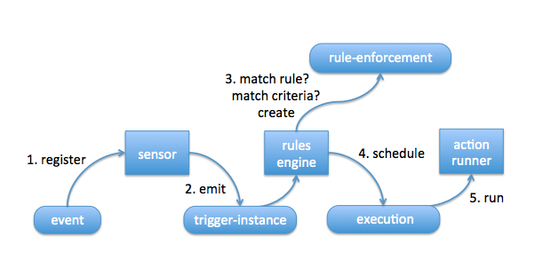

Sep 20, 2016
by Dmitri Zimine
I set up a sensor to watch for a trigger (trigger represents an external event; sensor will fire a trigger-instance of the trigger type when the event is detected). I created a rule: if the trigger happens, and matches the criteria, it should fire an action. I see that event had happened. I expected the actions to fire. But it didn’t happen. Where did it break?
This is a long read, and may look complicated. But really, it’s just three debugging steps. And it’s long because I refuse to write briefly, drop bunch of hints on the way and get you distracted. But as they say in math, the thicker the math book the faster it reads. Brace yourself.
In the example below, I’ll be showing you how we debugged our Twitter automation that scans tweets for mentions and posts it to Slack. A pretty good way to keep track on who is trash talking about us! The debugging “runbook” is generic and applies to troubleshooting other rules just fine.
First, let’s look at the trigger chain and review how it works.

An event happens. Sensors captures an event and emits… what? Previously we said for brevity, “emits trigger.” Now it’s time to get nuanced. It emits a “trigger-instance”. WTF? Let’s see. If a tweet is an event, how many of them do we have? Billions! and they are all of the same – what? type! They are tweets! So, a tweet is an event type, while each individual tweets are instances of “tweet” event type. Good so far? Ok, now twitter.matched_tweet is a trigger that corresponds to a tweet event type. And each individual tweet, an instance of “tweet” event type, is represented by “trigger-instance”. So, simply: trigger is a type, trigger-instance is an instance of this type. Therefore, when an actual tweet goes off, the sensor will emit a trigger-instance. Not clear? Read it again. Rinse. Spit. Continue. Proceed when it’s clear. Send us a note to break from infinite loop.
The act of matching the trigger-instance against the rule is called “rule-enforcement”. If the rule matches, it schedules an action execution. Execution id is created, and an execution request goes back into the message bus to find an action runner that picks it up to run it, as the name implies.
Check outside of StackStorm. In this case, I go to Twitter.com and see that tweet.
$ st2 sensor list
+-----------------------------+----------+-----------------------------+---------+
| ref | pack | description | enabled |
+-----------------------------+----------+-----------------------------+---------+
| ...
| twitter.TwitterSearchSensor | twitter | Sensor which monitors | True |
| ...
st2 trigger list --pack=twitter
+-----------------------+---------+--------------------------------------+
| ref | pack | description |
+-----------------------+---------+--------------------------------------+
| twitter.matched_tweet | twitter | Trigger which represents a matching |
| | | tweet |
+-----------------------+---------+--------------------------------------+
Remember that if you reconfigure a sensor (using config files or new config options), you must reload it for the configurations to take effect: st2ctl reload-component st2sensorcontainer. It’s only for sensors. For actions, new configurations are loaded with st2ctl reload --register-configs.
# st2 trigger-instance list
.... loads of output....
Oh no! This output is SO NOISY! How can I possibly find anything? How to find the needle in the haystack here? Look at the rule to check the trigger type, and filter by it. It’s twitter.matched_tweet, so:
st2 trigger-instance list --trigger=twitter.matched_tweet
+--------------------------+-----------------------+---------------------------+-----------+
| id | trigger | occurrence_time | status |
+--------------------------+-----------------------+---------------------------+-----------+
| 57ae23b0d805641b8ed11de1 | twitter.matched_tweet | Fri, 12 Aug 2016 19:29:52 | processed |
| | | UTC | |
| 57ae2ce2d805641b8ed12543 | twitter.matched_tweet | Fri, 12 Aug 2016 20:09:06 | processed |
| | | UTC | |
|...
| 57ae834bd805641b8ed16c5d | twitter.matched_tweet | Sat, 13 Aug 2016 02:17:47 | processed |
| | | UTC | |
+--------------------------+-----------------------+---------------------------+-----------+
If the trigger-instance for the event is not there, something is wrong with the sensor. It may not have captured it, or something else has gone wrong. Check the logs at /var/log/st2/st2sensorcontainer.log and debug the sensor.
If the trigger-instance IS here, we move on to the rule.
If you’re not sure, use st2 trigger-instance
Hint: form your ideal CLI output with combinations of -a and -y or -j parameters. Limit the number of records with -n, e.g.:
# st2 trigger-instance list -a "id" "occurence_type" "payload" -y --trigger=twitter.matched_tweet -n 5
- id: 57ae6724d805641b8ed155c3
payload:
created_at: Sat Aug 13 00:19:01 +0000 2016
favorite_count: 0
id: 764254896379932672
lang: en
place: null
retweet_count: 0
text: '@jiangu In that case, @Stack_Storm presentation at @Brocade. #NFD12'
url: https://twitter.com/ecbanks/status/764254896379932672
user:
description: 'PacketPushers dot net co-founder. Podcaster & writer covering
data center design & network engineering. I interview nerds so you
don''t have to. CCIE #20655.'
location: New Hampshire
name: Ethan Banks
screen_name: ecbanks
...
It did not get enforced. So the trigger-instance didn’t reach the rule engine. Go to Step 2, triple-check that the trigger-instance got emitted, and if it did, dive into the logs (run st2sensorcontainer with DEBUG) and troubleshoot at RabbitMQ level.
It does get enforced but didn’t create execution. For example:
$ st2 rule-enforcement list --rule=tweeter.relay_tweet_to_slack
+--------------------------+------------------+---------------------+--------------+------------------+
| id | rule.ref | trigger_instance_id | execution_id | enforced_at |
+--------------------------+------------------+---------------------+--------------+------------------+
| 57ae7037d805641b8ed15d18 | tweeter.relay_tw | 57ae7037d805641b8ed | | Sat, 13 Aug 2016 |
| | eet_to_slack | 15d16 | | 00:56:23 UTC |
+--------------------------+------------------+---------------------+--------------+------------------+
O-oh…
If “execution_id” is empty, it’s TROUBLE. Either the criteria didn’t match, or the Jinja template is messed up. Fire up st2-rule-tester, and test “will this trigger instance match this rule?” All input is conveniently at your disposal – rule.ref and trigger_instance_id is in the above output of rule enforcement list.
HINT: when copying IDs from table output kills you, remember the -y option, it may be handy!
st2 rule-enforcement list --rule=tweeter.relay_tweet_to_slack -y
- enforced_at: '2016-08-13T00:56:23.576716Z'
id: 57ae7037d805641b8ed15d18
rule:
ref: tweeter.relay_tweet_to_slack
trigger_instance_id: 57ae7037d805641b8ed15d16
- enforced_at: '2016-08-13T02:17:47.443764Z'
execution_id: 57ae834bd805641b8ed16c60
id: 57ae834bd805641b8ed16c61
rule:
ref: tweeter.relay_tweet_to_slack
trigger_instance_id: 57ae834bd805641b8ed16c5d
Here we go, testing the rule!
st2-rule-tester --trigger-instance-id=57ae7037d805641b8ed15d16 --rule-ref=tweeter.relay_tweet_to_slack
2016-08-13 01:06:52,158 INFO [-] Connecting to database "st2" @ "0.0.0.0:27017" as user "None".
2016-08-13 01:06:52,224 INFO [-] Validating rule tweeter.relay_tweet_to_slack for matched_tweet.
2016-08-13 01:06:52,224 INFO [-] 1 rule(s) found to enforce for matched_tweet.
2016-08-13 01:06:52,232 ERROR [-] Failed to resolve parameters
Original error : 'dict object' has no attribute 'errorHereForSure'
2016-08-13 01:06:52,233 INFO [-] === RULE DOES NOT MATCH ===
Aha! I’ve messed up the Jinja template. To fix it, I edit and update the rule. Before I update, I may want to check it. Note that st2-rule-testercan be used in both “online” mode, working against real trigger-instance and rule objects in the system, or “offline mode”, using rules from file, and trigger-instance captured to the file, or in any combination. Like this – here I edited the rule definition in a file, and before updating it, trying it with st2-rule-tester:
$ st2-rule-tester --trigger-instance-id=57ae7037d805641b8ed15d16 --rule=relay_tweet_to_slack.yaml
2016-08-13 01:14:07,084 INFO [-] Connecting to database "st2" @ "0.0.0.0:27017" as user "None".
2016-08-13 01:14:07,142 INFO [-] Validating rule tweeter.relay_tweet_to_slack for matched_tweet.
2016-08-13 01:14:07,142 INFO [-] 1 rule(s) found to enforce for matched_tweet.
2016-08-13 01:14:07,150 INFO [-] Action parameters resolved to:
2016-08-13 01:14:07,150 INFO [-] message: A tweet from @dzimine:\nhttps://twitter.com/dzimine/status/764264543321100288
2016-08-13 01:14:07,150 INFO [-] channel: #twitter-relay
2016-08-13 01:14:07,150 INFO [-] === RULE MATCHES ===
-
It works! You can see what kind of action parameters I’m gonna send to my action from this particular trigger-instance.
Ok, now st2 rule update tweeter.relay_tweet_to_slack relay_tweet_to_slack.yaml, rule is fixed.
If the external event is too important to miss, but now it has already happened and not gonna happen again…you may want to re-fire your automation for it, by re-emitting the trigger-instance, now that the rule is fixed:
st2 trigger-instance re-emit 57ae7037d805641b8ed15d16
Trigger instance 57ae7037d805641b8ed15d16 succesfully re-sent.
Checking…Look, now same the trigger-instance appears twice, and the re-emitted one triggered the desired action!
st2 rule-enforcement list --rule=tweeter.relay_tweet_to_slack
+--------------------------+----------------------+----------------------+----------------------+----------------------+
| id | rule.ref | trigger_instance_id | execution_id | enforced_at |
+--------------------------+----------------------+----------------------+----------------------+----------------------+
| 57ae7037d805641b8ed15d18 | tweeter.relay_tweet_ | 57ae7037d805641b8ed1 | | Sat, 13 Aug 2016 |
| | to_slack | 5d16 | | 00:56:23 UTC |
| 57ae834bd805641b8ed16c61 | tweeter.relay_tweet_ | 57ae834bd805641b8ed1 | 57ae834bd805641b8ed1 | Sat, 13 Aug 2016 |
| | to_slack | 6c5d | 6c60 | 02:17:47 UTC |
+--------------------------+----------------------+----------------------+----------------------+----------------------+
We do have this procedure documented in the Troubleshooting section of our docs. But we know that we’re short on tutorials, and we’re working hard to fix it.
Please tell us here, or on Slack, what other areas of StackStorm you’ve got questions about, and where you want help. Better yet, write it! We will be happy to post your tutorials on our blog, promote them, or make part of our documentation.
Happy automation!